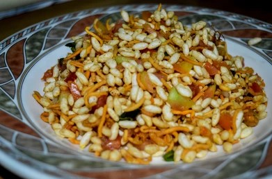

Jhalmuri

The perfect evening snack jhalmuri
Jhal muri is a street food/chaat made in Kolkata with good laal muri (puffed rice),
boiled potato, chopped fresh cucumber, tomatoes, green chillies, coconut,
sprouted Bengal gram, boiled yellow peas, etc. All of this is seasoned with a
special jhal muri moshla (spice mix), generous sprinkling of pungent mustard oil,
and black salt. Jhal muri sellers set up their shops outside schools, colleges,
railway stations, parks—anywhere that people need a light, affordable evening snack.
Our favourite jhal muris are those served on trains during long journeys, by
travelling vendors who board the train with their jhal muri setup, make jhal muri
for the hungry (or bored) passengers, and then get off the train at another
station. They keep travelling back and forth on certain routes all day selling
delicious jhal muri.
Ingrediants
- 30 g muri (puffed rice)
- 25 g chanachur
- 15 g plain bhujiya
- ½ tsp bhaja moshla
- ¼ tsp beetnoon (black salt)
- 15 g boiled motor (yellow peas)
- 10 g raw, sprouted chhola (whole Bengal gram)
- ¼ tsp ginger
- 25 g boiled potatoes
- 8 g coconut
- ¼ tsp green chilli paste
- ¼ teaspoon sugar (optional)
- 5 g aam'er achar'er tel (oil from green-mango pickle)
- 3 g mustard oil
- 15 g onions
- 10 g tomatoes
- 5 g lime juice
Steps
- Before starting, make sure that your muri is very crispy.
You can microwave it for 30 seconds if you want.
- Boil potatoes. Peel and cut them into 1 cm cubes.
Finely chop onions, green chillies, and ginger.
Dice the tomatoes, removing the pulpy interior,
or the muri will turn soggy. Chop coconut.
Make a paste of green chillies.
- Take muri in a large mixing bowl.
Add chanachur and bhujiya. Sprinkle bhaja moshla
and black salt (beetnoon). Add boiled motor
(yellow peas) and raw, sprouted chhola (whole Bengal gram).
Add green chillies and ginger. Now, add the boiled and
chopped potato. Add coconut. Add the dry(ish) ingredients
first so that the muri does not turn soggy.
- Now, add green chilli paste. Drizzle some aam'er
achaar'er tel (oil from green-mango pickle) and
raw mustard oil. Add onions, tomatoes, and a
squeeze lime juice.
- Mix quickly and serve.